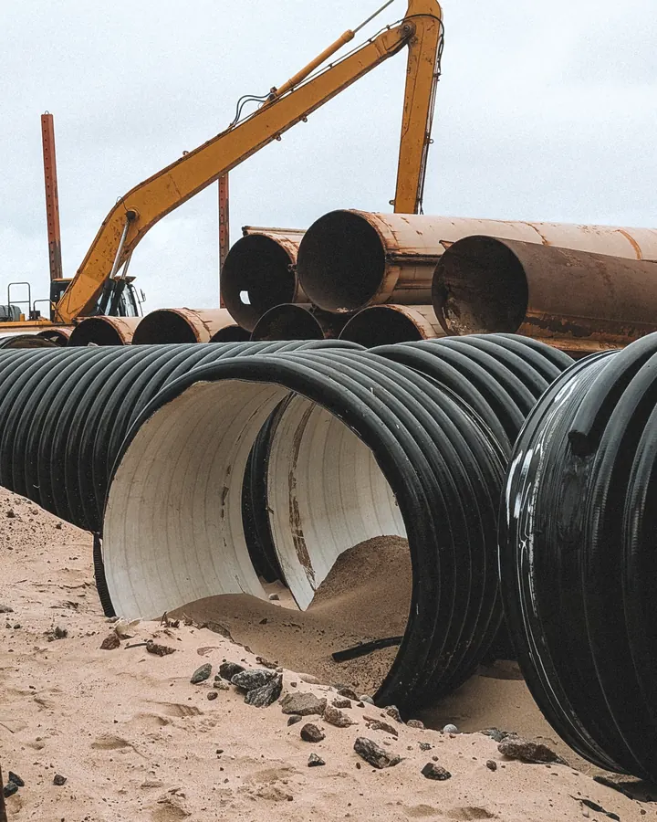
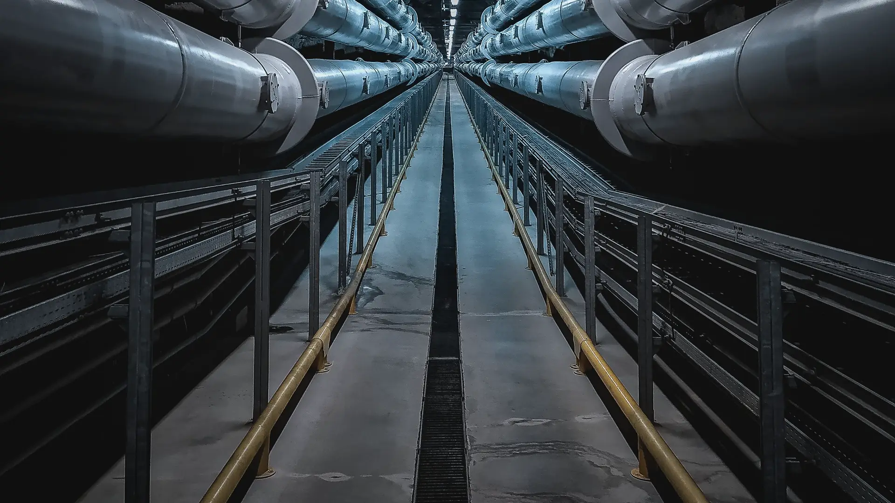
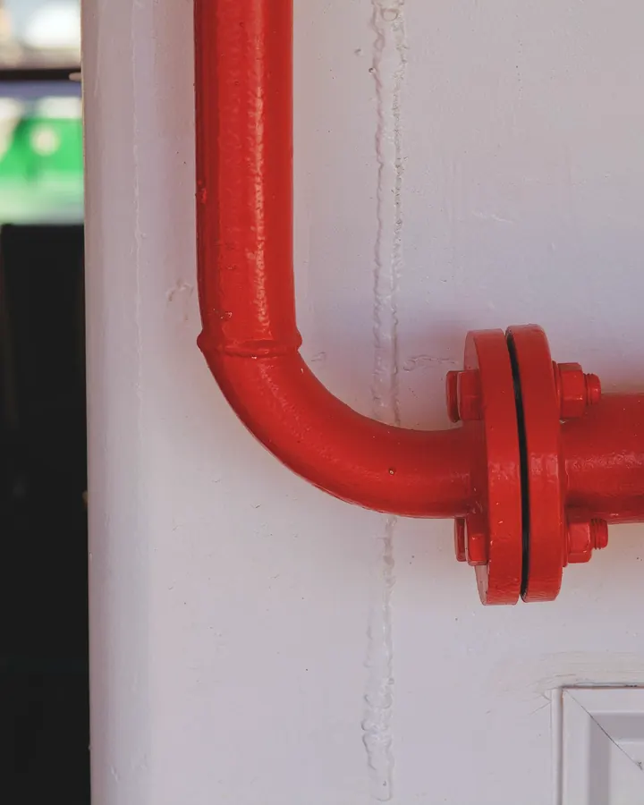
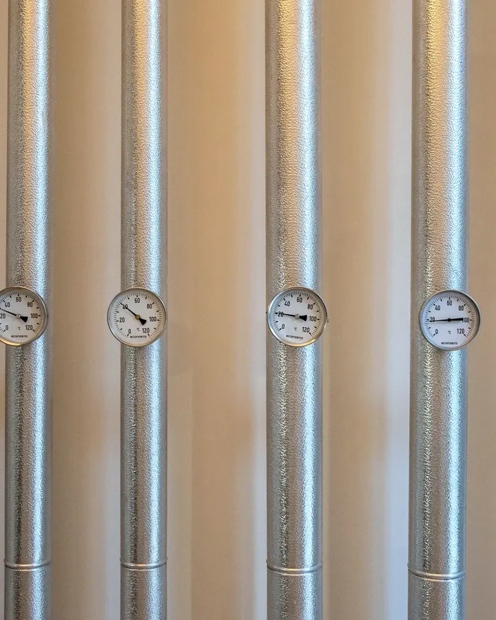
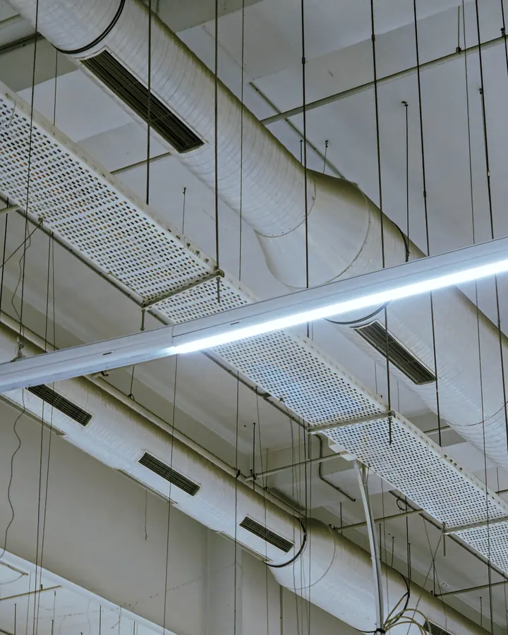
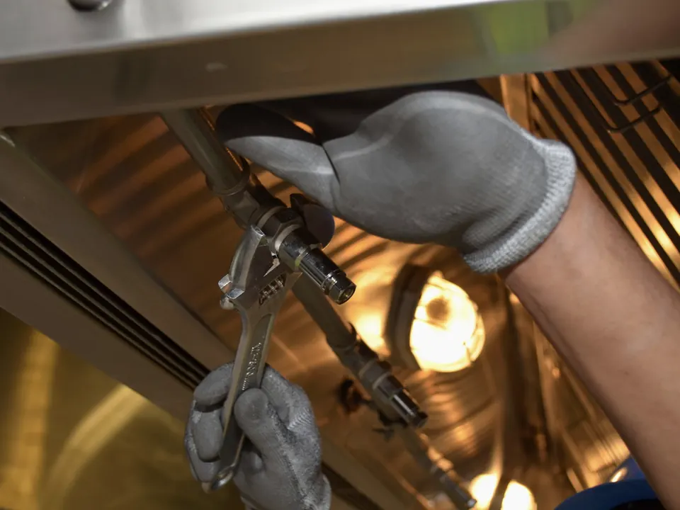
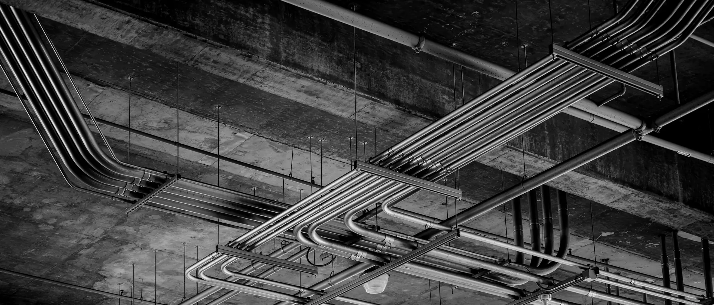
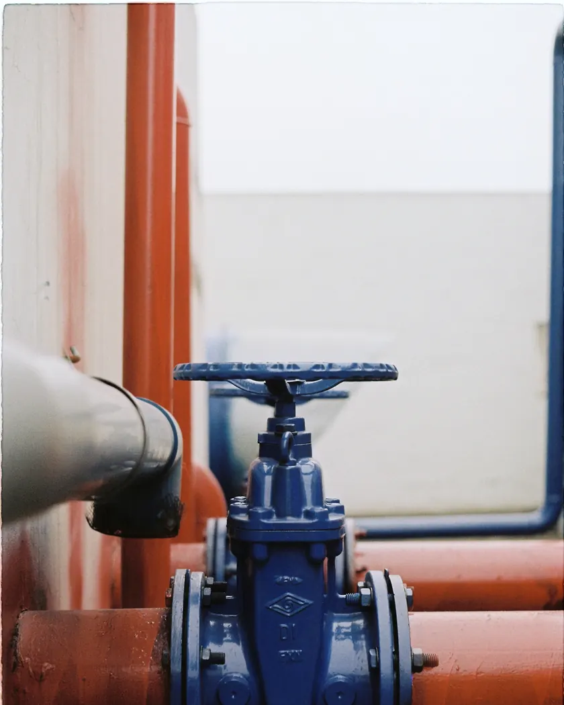
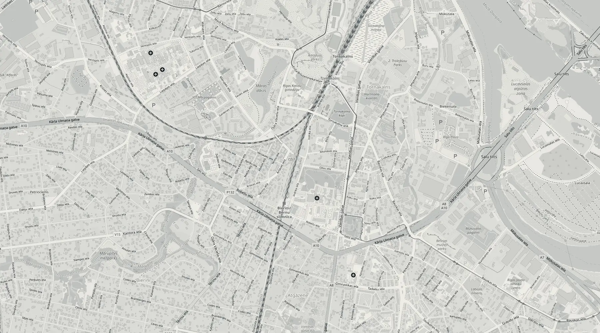

01Ūdensapgāde un kanalizācijaВодоснабжение и канализация
Ūdensvada un kanalizācijas tīkli. Izbūvējam, vadām būvdarbus un veicam būvuzraudzību.Сети водопровода и канализации. Строим, руководим работами и ведём технадзор.

Inženiertīkli · RīgaИнженерные сети · Рига
Būvējam ūdensapgādes un kanalizācijas tīklus, vadām un uzraugām siltumapgādes, ventilācijas un gaisa kondicionēšanas būvdarbus.Строим сети водоснабжения и канализации, руководим работами и ведём технадзор по теплоснабжению, вентиляции и кондиционированию.
SistēmasСистемы
Būvkomersantu reģistrā mūsu jomas ir ūdensapgāde un kanalizācija (ieskaitot ugunsdzēsības sistēmas), siltumapgāde, ventilācija un gaisa kondicionēšana.В регистре строительных коммерсантов наши сферы: водоснабжение и канализация (включая системы пожаротушения), теплоснабжение, вентиляция и кондиционирование.

01Ūdensvada un kanalizācijas tīkli. Izbūvējam, vadām būvdarbus un veicam būvuzraudzību.Сети водопровода и канализации. Строим, руководим работами и ведём технадзор.

02Ugunsdzēsības ūdensapgāde kā daļa no ēkas ūdensapgādes sistēmas. Vadām būvdarbus un uzraugām tos.Противопожарное водоснабжение как часть системы водоснабжения здания. Руководим работами и ведём надзор.

03Siltumapgādes un apkures sistēmas. Vadām būvdarbus un veicam būvuzraudzību pēc projekta.Системы теплоснабжения и отопления. Руководим работами и ведём технадзор по проекту.

04Ventilācijas un gaisa kondicionēšanas sistēmas. Uzraugām, lai tās atbilst projektam un normatīviem.Системы вентиляции и кондиционирования. Следим, чтобы они соответствовали проекту и нормам.

Divas lomas objektāДве роли на объекте
Atbildam par darbiem objektā: secību, materiāliem, termiņiem un kvalitāti. Kārtojam būvdarbu žurnālu un segto darbu aktus.Отвечаем за работы на объекте: порядок, материалы, сроки и качество. Ведём журнал работ и акты скрытых работ.
Pasūtītāja pusē pārbaudām, vai darbi atbilst projektam un normatīviem, un pieņemam segtos darbus, pirms tos aizsedz.На стороне заказчика проверяем соответствие работ проекту и нормам и принимаем скрытые работы до их закрытия.

Labs inženiertīkls ir tas, par kuru vairs nav jādomā.Хорошая инженерная сеть это та, о которой больше не нужно думать.
Tāpēc segtos darbus pārbaudām, kamēr tie vēl ir redzami.Поэтому скрытые работы проверяем, пока их ещё видно.
UzņēmumsКомпания
Dati no Uzņēmumu reģistra, Būvniecības informācijas sistēmas un VID publiskajiem datiem par 2024. gadu.Данные Регистра предприятий, Информационной системы строительства и публичные данные VID за 2024 год.

Būvkomersantu reģistrsРегистр строительных коммерсантов
Nr.0668-R
Kā strādājamКак работаем
Uzrakstiet vai piezvaniet: kur atrodas objekts, kuras sistēmas un vai ir projekts.Напишите или позвоните: где объект, какие системы и есть ли проект.
Izskatām projektu, ja vajag, apskatām objektu un vienojamies par apjomu, termiņiem un cenu.Изучаем проект, при необходимости смотрим объект и согласуем объём, сроки и цену.
Izbūvējam un vadām darbus vai uzraugām tos pasūtītāja pusē. Segtos darbus pieņemam ar aktu.Строим и руководим работами или ведём технадзор на стороне заказчика. Скрытые работы принимаем по акту.
Pārbaudes un izpilddokumentācija, lai sistēmas var nodot ekspluatācijā.Испытания и исполнительная документация, чтобы системы можно было сдать в эксплуатацию.

BirojsОфис
AdreseАдресIndriķa iela 7A, Rīga, LV-1004Indriķa iela 7A, Rīga, LV-1004
Atvērt kartēОткрыть на картеKontaktiКонтакты
Uzrakstiet, kur atrodas objekts, kuras sistēmas jāizbūvē vai jāuzrauga un vai ir projekts. Atbildēsim ar priekšlikumu.Напишите, где находится объект, какие системы нужно построить или проверить и есть ли проект. Ответим с предложением.